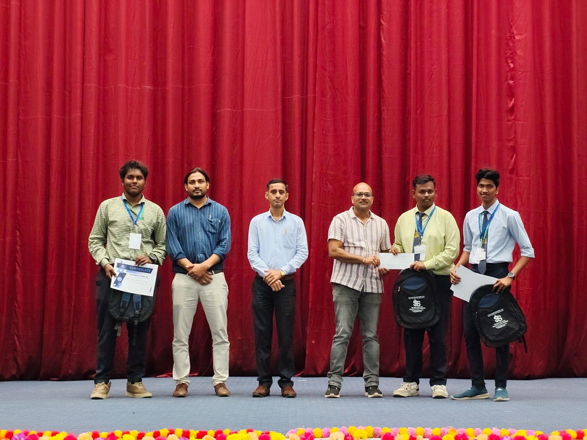
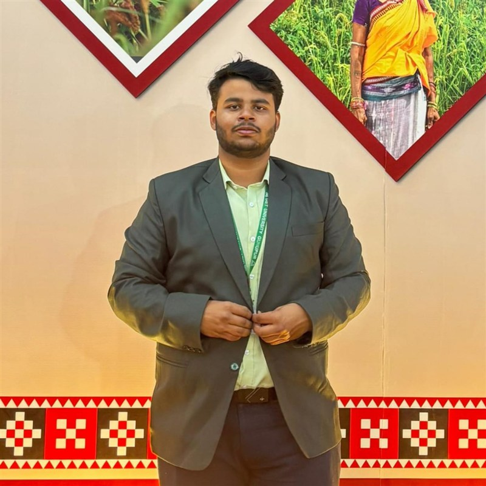
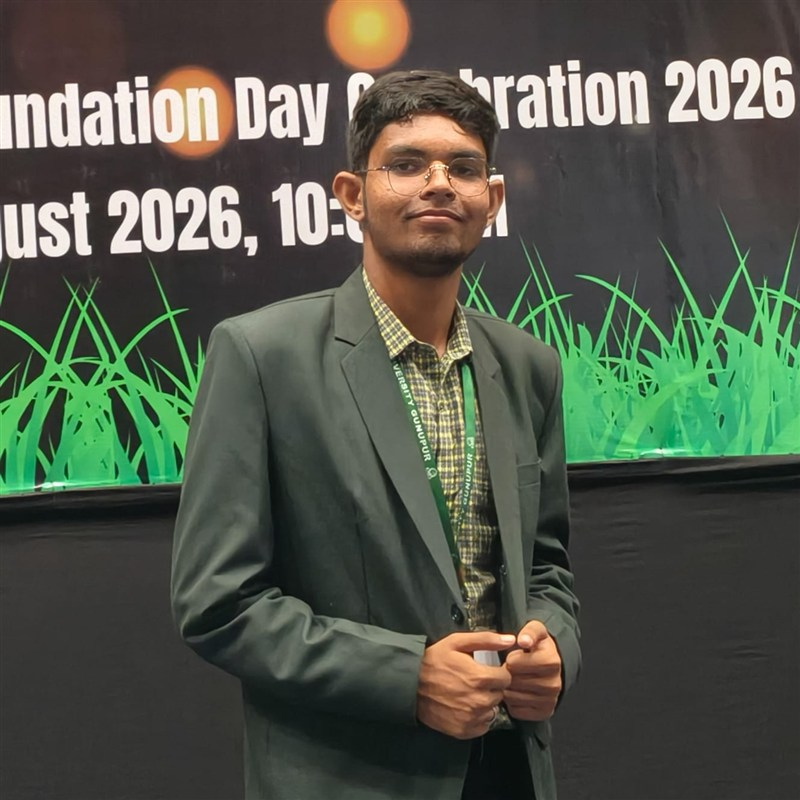
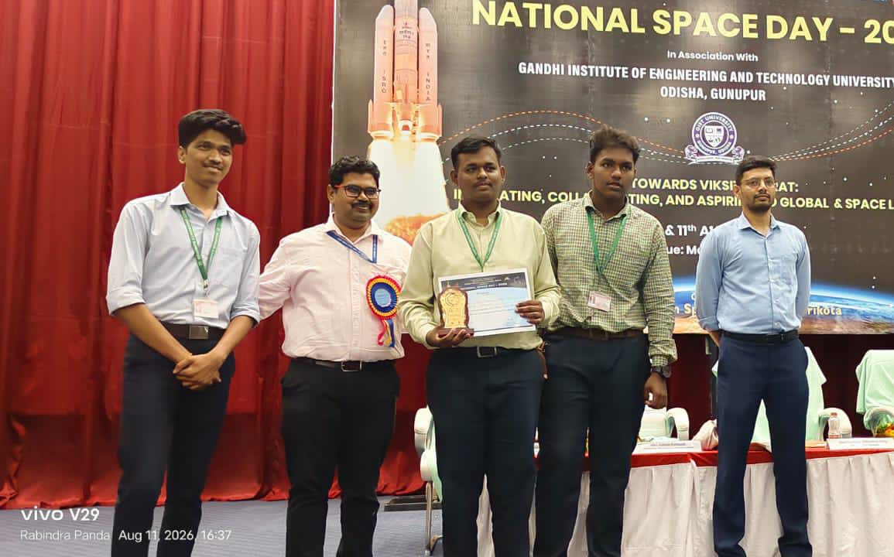
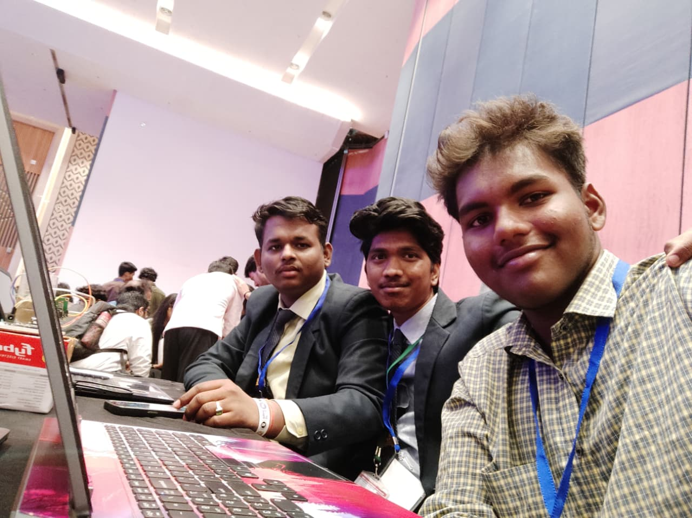

KisanSahayak is an end-to-end farm automation and smart agriculture system engineered to manage farms on a contract-based operational framework. Developed by Team AGRI DEVELOPERS, it continuously monitors soil, crop, and environmental conditions using sensors and camera/thermal observation to execute automated, targeted irrigation and field operations.

Transforming traditional farming from manual observation and guesswork into an autonomous, data-driven management system.
Current farming practices largely depend on manual monitoring and conventional flood or timer-based irrigation.
KisanSahayak provides an end-to-end automation system designed specifically for a contract-based farm management model.
Designed with modular, low-cost, and robust industrial components to ensure high field reliability for small and large farms.
An ESP32-S3 microcontroller interfaces with multi-zone capacitive soil moisture sensors and environmental monitors to collect real-time data from each farm quadrant.
Integrated thermal sensors detect crop canopy temperature variations (indicating transpiration stress), while high-resolution cameras observe leaf surface health and insect activity.
Raw sensor readings are computed against crop-specific agronomic thresholds to determine the exact water volume and priority index needed for each individual farm quadrant.
A high-torque servo motor positioned at origin coordinate (0,0) physically rotates
the delivery nozzle toward the designated farm quadrant requiring irrigation.
An industrial relay-controlled pump activates for the precise duration required to deliver the calculated water volume, shutting off automatically to eliminate wastage.
Operates independently in remote agricultural fields using solar power support. Field data and imagery sync to web and mobile apps for farmer dashboards and crop advisory.
Combining academic research authority in Agricultural Science (B.Sc Ag) with Computer Science & AI/ML engineering from GIET University.
The CTFO is a unique hybrid executive who owns both the deep-tech engineering and the financial engine of KisanSahayak. This single leader bridges the gap between complex edge-computing hardware and startup fiscal strategy, ensuring our agritech solutions are both technologically groundbreaking and financially viable.

Leads product roadmap, agritech solution design, and prototype development cycles for KisanSahayak's IoT hardware and software suite.

Chief architect of KisanSahayak's ESP32-S3 IoT hardware, servo-control quadrant logic, thermal sensing pipelines, and deep learning computer vision algorithms for crop disease detection.
Directs crop science research, sensor agronomy calibration, field trial documentation, and agricultural data analysis for the system.
Focusing on precision agronomy, crop health diagnostics, soil sensor field evaluations, and sustainable cultivation protocols for the KisanSahayak initiative.
Field trial sessions, sensor calibration, and prototype assembly


Designed specifically to be affordable, scalable, and practical for small, marginal, and commercial farm plots.
Supplies water strictly according to the actual moisture requirement of each quadrant, cutting typical agricultural water loss by up to 40%.
Minimizes unnecessary pumping electricity, reduces fertilizer runoff, and decreases reliance on costly manual labor for routine valve monitoring.
Continuous thermal and camera inspection identifies disease, pest, and nutrient stress before irreversible crop damage or yield penalty occurs.
Root-zone moisture is maintained in the optimal agronomic band continuously, fostering stronger root systems and higher harvest quality.
Uses affordable, readily available components like ESP32-S3, capacitive sensors, high-torque servos, and mini pumps to keep unit costs accessible.
Easily scales from a 4-quadrant setup to coordinate-level precision grids, greenhouse nurseries, and orchards without redesigning the core system.